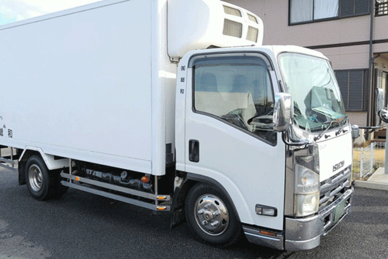
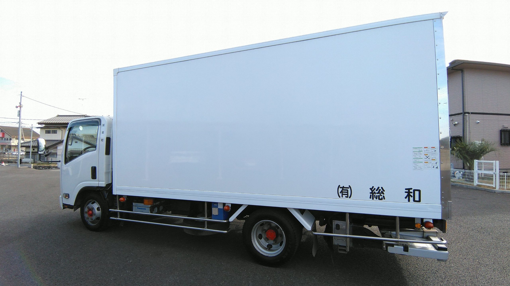

WORK
地域の「食」を、冷たいまま届ける
千葉県印西市を拠点に、
冷凍・冷蔵食品の集荷と配送を行っています。
食品のルート配送
冷凍冷蔵車を使用し、安心・安全に食品をお届けすることをスタッフ一同心がけています。
DELIVERY
01
主な配送先
千葉県内のスーパーや飲食店、ドラッグストア、仕分けセンターを中心に配送しています。
ITEMS
02
取り扱い
冷凍・冷蔵食品などの集荷・配送を行っています。

AREA 03
エリア
関東一円（遠くても埼玉・神奈川・栃木まで）。99％日帰りの運行です。
車両と温度管理
2t・4tの冷凍冷蔵車で、温度管理が必要な食品をお届けしています。
安全運転は、運送会社のいちばんの仕事です
お預かりした荷物を、安全にお届けすること。そのための仕組みを整えています。
ドライブレコーダー 保有トラックに搭載し、運転を記録・振り返りに活用しています。
デジタルタコメーター 速度や休憩を管理し、無理のない運行につなげています。
運転教育 運転技術とマナーの向上に取り組んでいます。
当社車両の走行についてお気づきの点は、お問い合わせフォームの「走行に関するご意見」からお知らせください。
OUR MISSION
お預かりした荷物を、安全にお届けする。
運送会社にとって、何より大切なことです。
今後の展開
平ボディ車による配送業務も準備中です。
配送のご依頼・お取引のご相談
お問い合わせフォーム、またはお電話（0476-46-7825）で承ります。
一緒に走るドライバーを募集しています
2t・4t冷凍冷蔵車のルートドライバー。経験者・未経験者ともに歓迎します。